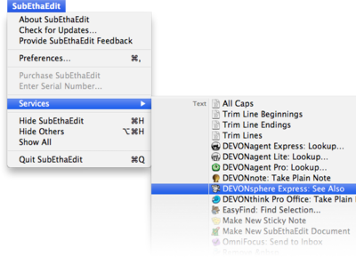

|
The DEVONthink Pro Office > Services menu gives you access to special commands published either by other applications, such as TextEdit or Safari, or by services extensions such as DEVONtechnologies' WordService or CalcService. Also, DEVONthink Pro Office publishes its own services in the Services menu.

DEVONthink Pro Office services
DEVONthink Pro Office installs several services for copying or summarizing selected text, capturing a web page, or searching documents in the database.
-
Add to DEVONthink: Adds selected files, bookmarks, or images to your database. This service is also available in the Finder's contextual manu.
-
Take Plain/Rich Note: Adds selected text to the global inbox from any application that support services (!) as plain or rich text. Taking a rich text note also copies images and clickable links. If the source document is a web page or a news feed, DEVONthink Pro Office tries to capture the address of the page or feed as well. This only works with applications that support this feature, such as Safari, DEVONagent Pro, or NetNewsWire.
-
Capture Web Archive: Captures the web page displayed in the frontmost window of any WebKit-based browser (such as Safari or DEVONagent Pro) as a web archive to DEVONthink Pro Office's inbox. This menu item is only shown when available, e.g., when Safari is the active application.
-
Append Plain/Rich Note: Adds selected text as plain or rich text to the last note taken using the DEVONthink Pro Office Services menu items.
-
Lookup: Opens the Search windowin DEVONthink Pro Office with the selected text copied as search term.
-
Summarize: Creates a new note in DEVONthink Pro Office's inbox with a summary of the selected text. DEVONthink Pro Office uses all documents in the open database for determining what's important and what's not. The summarization settings in the preferences, Editing tab, define whether the summary shall be based on sentences or paragraphs.
The Sorter services
The Sorter adds another sub-menu to the Services menu that contains a Send To Inbox command. If possible, it copies the current selection to the Sorter's inbox.
|
Note: After installing DEVONthink Pro Office you need to log out, then back in again for new services and their shortcuts to be recognized. If one or more DEVONthink Pro Office Services menu commands do not carry a shortcut, it may be because another application grabbed them. Mac OS X will assign the shortcut if no other application already uses the same key combination.
|
|